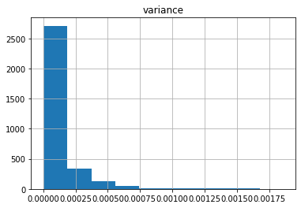

Example Classification
In this notebook will be showed how to use lit-saint for a classification problem. We will use the “Census Income” dataset in which the objective is to predict whether income exceeds $50K/yr based on census data
Import libraries
[1]:
import numpy as np
import pandas as pd
import os
from pathlib import Path
from sklearn.metrics import classification_report
from sklearn.model_selection import train_test_split
import wget
from lit_saint import Saint, SaintConfig, SaintDatamodule, SaintTrainer
from pytorch_lightning import Trainer, seed_everything
Download Data
[2]:
url = "https://archive.ics.uci.edu/ml/machine-learning-databases/adult/adult.data"
out = Path(os.getcwd() + '/data/adult.csv')
out.parent.mkdir(parents=True, exist_ok=True)
if out.exists():
print("File already exists.")
else:
wget.download(url, out.as_posix())
File already exists.
Configure lit-saint
[3]:
# if you want to used default value for the parameters
cfg = SaintConfig()
# otherwise you can use hydra to read a config file (uncomment the following part)
# from hydra.core.config_store import ConfigStore
# cs = ConfigStore.instance()
# cs.store(name="base_config", node=SaintConfig)
# with initialize(config_path="."):
# cfg = compose(config_name="config")
Prepare Data
[4]:
seed_everything(42, workers=True)
df = pd.read_csv(os.getcwd() + "/data/adult.csv", header=None)
df_train, df_test = train_test_split(df, test_size=0.10, random_state=42)
df_train, df_val = train_test_split(df_train, test_size=0.10, random_state=42)
df_train["split"] = "train"
df_val["split"] = "validation"
df = pd.concat([df_train, df_val])
# The target is in the column number 14 and we can see that it contains some string so the library will considered the problem as a classification
df.head()
Global seed set to 42
[4]:
| 0 | 1 | 2 | 3 | 4 | 5 | 6 | 7 | 8 | 9 | 10 | 11 | 12 | 13 | 14 | split | |
|---|---|---|---|---|---|---|---|---|---|---|---|---|---|---|---|---|
| 25402 | 19 | State-gov | 67217 | Some-college | 10 | Never-married | Other-service | Not-in-family | White | Male | 594 | 0 | 24 | United-States | <=50K | train |
| 5221 | 18 | Private | 300379 | 12th | 8 | Never-married | Adm-clerical | Own-child | White | Male | 0 | 0 | 12 | United-States | <=50K | train |
| 11528 | 18 | Private | 150817 | HS-grad | 9 | Never-married | Sales | Own-child | White | Female | 0 | 0 | 20 | United-States | <=50K | train |
| 11085 | 28 | ? | 80165 | Some-college | 10 | Divorced | ? | Not-in-family | White | Female | 0 | 0 | 30 | United-States | <=50K | train |
| 11464 | 69 | Private | 108196 | 9th | 5 | Never-married | Craft-repair | Other-relative | White | Male | 2993 | 0 | 40 | United-States | <=50K | train |
Fit the model
[ ]:
data_module = SaintDatamodule(df=df, target=df.columns[14], split_column="split",
num_workers=cfg.network.num_workers,
data_loader_params={"batch_size": cfg.network.batch_size})
model = Saint(categories=data_module.categorical_dims, continuous=data_module.numerical_columns,
config=cfg, dim_target=data_module.dim_target)
pretrainer = Trainer(max_epochs=cfg.pretrain.epochs)
trainer = Trainer(max_epochs=cfg.train.epochs)
saint_trainer = SaintTrainer(pretrainer=pretrainer, trainer=trainer)
saint_trainer.fit(model=model, datamodule=data_module, enable_pretraining=True)
Make predictions
[ ]:
prediction = saint_trainer.predict(model=model, datamodule=data_module, df=df_test)
df_test["prediction"] = np.argmax(prediction, axis=1)
[7]:
print(classification_report(data_module.predict_set[df.columns[14]], df_test["prediction"]))
precision recall f1-score support
0 0.89 0.94 0.91 2456
1 0.78 0.63 0.70 801
accuracy 0.87 3257
macro avg 0.83 0.79 0.80 3257
weighted avg 0.86 0.87 0.86 3257
Uncertainty Estimation
[ ]:
mc_prediction = saint_trainer.predict(model=model, datamodule=data_module, df=df_test, mc_dropout_iterations=4)
[9]:
mc_prediction
[9]:
array([[[0.9885666 , 0.98791903, 0.987258 , 0.986961 ],
[0.01143348, 0.01208097, 0.01274193, 0.01303895]],
[[0.4831934 , 0.46905848, 0.4488404 , 0.5043215 ],
[0.51680666, 0.53094155, 0.55115956, 0.49567848]],
[[0.38506672, 0.42264497, 0.37724075, 0.39455432],
[0.61493325, 0.577355 , 0.6227592 , 0.6054457 ]],
...,
[[0.58161247, 0.5454856 , 0.56008404, 0.5523559 ],
[0.41838756, 0.4545144 , 0.43991593, 0.44764405]],
[[0.9095162 , 0.91370744, 0.9123672 , 0.8962503 ],
[0.09048383, 0.08629262, 0.08763281, 0.10374971]],
[[0.42250738, 0.41206264, 0.42539898, 0.40183735],
[0.5774926 , 0.5879373 , 0.574601 , 0.59816265]]], dtype=float32)
[10]:
# Given the predictions we can compute the variance across the iterations, so axis=2
var_prediction = np.var(mc_prediction,axis=2)
# Then we focus our attention on the variance of the first class
pd.DataFrame(var_prediction[:,0], columns=["variance"]).hist()
[10]:
array([[<AxesSubplot:title={'center':'variance'}>]], dtype=object)
